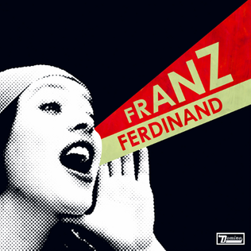
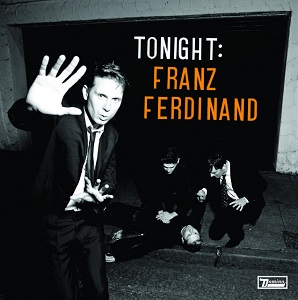
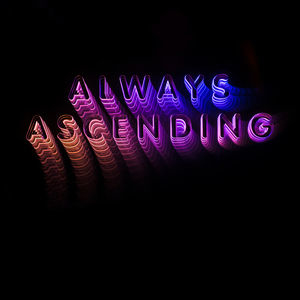

Franz ferdinand
- 1. Jacqueline
- 2. Tell Her Tonight
- 3. Take Me out
- 4. The Dark of the Matinée
- 5. Auf Achse
- 6. Cheating on You
- 7. This Fire
- 8. Darts of Pleasure
- 9. Michael
- 10. Come on Home
- 11. 40'
You Could Have It
So Much Better

- 1. The Fallen
- 2. Do You Want to
- 3. This Boy
- 4. Walk Away
- 5. Evil and Heathen
- 6. You're the Reason I'm Leaving
- 7. Eleanor Put Your Boots On
- 8. Well That Was Easy
- 9. What You Meant
- 10. I'm Your Villain
- 11. You Could Have it So Much Better
- 12. Fade Together
- 13. Outsiders
Tonight:
Franz Ferdinand

- 1. Ulysses
- 2. Turn It On
- 3. No You Girls
- 4. Send Him Away
- 5. Twilight Omens
- 6. Bite Hard
- 7. What She Came For
- 8. Live Alone
- 9. Can't Stop Feeling
- 10. Lucid Dreams
- 11. Dream Again
- 12. Katherine Kiss Me
Right Thoughts,
Right Words,
Right Action
- 1. Right Action
- 2. Evil Eye
- 3. Love Illumination
- 4. Stand on the Horizon
- 5. Fresh Strawberries
- 6. Bullet
- 7. Treason! Animals
- 8. The Universe Expanded
- 9. Brief Encounters
- 10. Goodbye Lovers & Friends
Always Ascending
- 1. Always Ascending
- 2. Lazy Boy
- 3. Paper Cages
- 4. Finally
- 5. The Academy Award
- 6. Lois Lane
- 7. Huck and Jim
- 8. Glimpse of Love
- 9. Feel the Love Go
- 10. Slow Don't Kill Me Slow